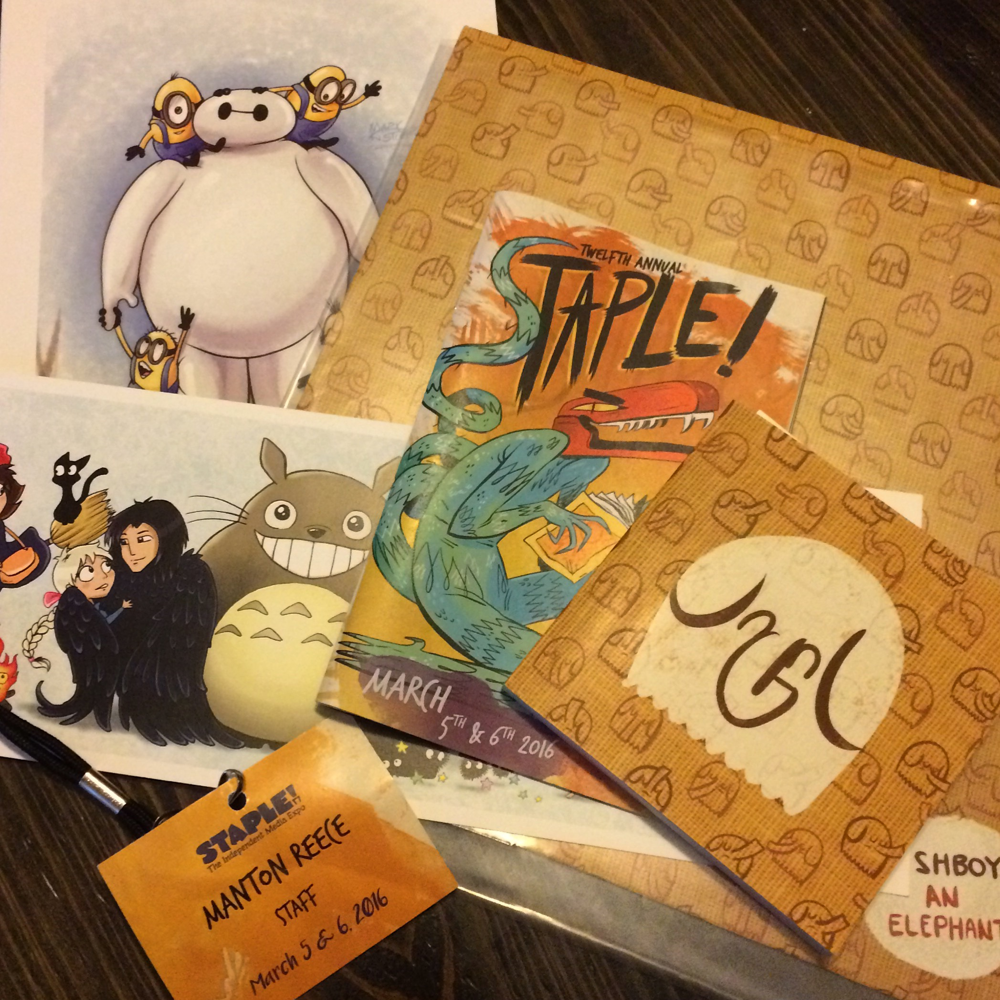

Ignore that it’s hidden behind a gas station. Found the cozy coffee shop Sips Coffee & More in Round Rock today. Happily surprised that they make fresh crepes.
→ 2016/03/10 11:26 amMonthly Archives: March 2016
Very rainy day for the coffee shop commute. Marking the 14th anniversary of this weblog with a visit to a cafe that’s even older than that: Spider House. Trying the dirty horchata (rice milk, cinnamon, and 2 shots of espresso, shaken with ice).
→ 2016/03/09 11:20 amApple Pencil and sequential art tech reviews
Serenity Caldwell has a fantastic, hand-drawn review of the Apple Pencil for iMore. It reminds me of Scott McCloud. (I blogged about his book Understanding Comics about 13 years ago.)
I’d actually love to see this graphic review style used for other products too. It nicely balances against the trend of long written reviews. Both could have their place.
As for Serenity’s conclusions, I think you’ll hear widespread agreement from artists: the Apple Pencil is significantly better than any other stylus. The palm-rejection alone is reason to get one.
Today’s stop for coffee and a little coding is Fat Cats: Organic Coffee & Desserts. Their cold brew coffee comes with frozen coffee ice cubes!
→ 2016/03/08 12:57 pmBlogging your photos
Colin Devroe started microblogging on his own site, with separate sections for statuses and photos:
“I want to post content to my own personal site and not through closed social networks — because I want to keep control of everything I create forever. […] This doesn’t mean that I won’t be posting to Twitter or Facebook or Instagram, but that everything that I post there will originate here on my site.”
It’s the photos and their RSS feed that caught my attention. Others have done this too, but for some reason I rarely post photos here on my own site. I’ve stuck with using Instagram instead.
I need to change that. I do like the Instagram app, though, so I’m going to keep using it. I’ll just copy the photos over to my site as well, and I’ll use Workflow on iOS to help automate it. The basic steps are:
- After posting the photo on Instagram, copy the caption to the iOS clipboard. This will be the title of the blog post.
- Select the Instagram-edited image in the Photos app and run the workflow.
- Workflow makes a filename based on the title, with some simple substitutions. Lowercase, spaces become underscores, and drop some characters.
- Transmit gets launched and I confirm the upload to my own server.
- Workflow creates a WordPress blog post with an img tag and the relevant metadata.
It’s not bad. You can see the workflow here. I’ve uploaded a bunch of my most recent Instagram photos this way. I’m not sure whether I’ll go back and mirror all the old ones.
These photos live under a new Photos category. I’ve excluded this category from the main RSS feed that I use for cross-posting, so they won’t automatically go to Twitter. You can continue to follow me on Instagram if you prefer that.
Comics and prints for the kids from Staple! Expo

A little off my morning routine today, so working this afternoon from Kick Butt Coffee. Cool place with a stage for live music at night.
→ 2016/03/07 1:29 pmThis morning’s coffee is from the Elixer coffee truck. Usually at Mueller, but parked this weekend at Staple! Expo. Coffee plus indie comics in one place.
→ 2016/03/06 11:58 amGrabbing a quick breakfast and coffee at Cherrywood Coffeehouse before heading over to Staple! Expo to help set up. If you’re in Austin and a fan of indie comics and art, check it out today or tomorrow.
→ 2016/03/05 8:37 amOn this week’s Core Int, we talk about the routine of coffee shops, productivity, @AppleSupport, and shipping your 1.0. coreint.org/222
→ 2016/03/04 4:22 pmSlow transitions in watchOS
Much has been made of the Apple Watch not being fast enough. It’s too slow for full iPhone-like apps, of course, but that doesn’t bother me because I think the watch is pretty great at its core features. But I’ve noticed that it’s slow even for some of the simple stuff, and I don’t think this can be blamed on hardware alone.
Take notifications, for example. There are several distinct steps to notifications after you receive one:
- Tapping a notification.
- Waiting for it to load, which is an animated transition.
- Optionally scrolling to the bottom to read it all.
- Actually tapping Dismiss to get rid of it.
There’s a tiny lag between all of these. I frequently can’t scroll right away, as if it’s not responsive until the animation completes. The Dismiss button also doesn’t seem to be enabled immediately, requiring a 2nd tap before it “clicks”.
I bet these are solvable with a software update. Shorter animated transitions or pre-loading notification text might go a long way to improve the experience.
Trying Stinson’s Bistro in Rosedale this morning. This area sure has some nice coffee shops. Obviously Houndstooth on Lamar, but also Pacha which I visited a couple weeks ago, and Thunderbird nearby too.
→ 2016/03/04 9:15 amTempted by the Amazon Dot. We’ve had the Echo for a while and use it all the time. Because currently only Echo customers can order the Dot, feels like it’s aimed at extending your Alexa-friendly house, e.g. putting the Dot in a bedroom or office.
→ 2016/03/03 1:36 pmThe evolution of linkblogging
In my posts about defining what makes a microblog post and guidelines for RSS, I talked a little about links but didn’t explore linkblogging. While many blog authors post primarily long essays, shorter link blogs are a common approach for bloggers who want to post new content several times a day.
Essentially two types of link blogs have evolved since the early days of blogging. The most traditional link blog can be seen in Dave Winer’s posts (click on the Links tab). These are links with a very short commentary. Many tweets are like this. In a way, this format is the purest form of microblogging.
The second type of link blog starts to fall outside the limits of microblogging. Instead of just including a URL, authors use a quote from the linked material as the foundation for the post. The majority of Daring Fireball posts adopt this format. While John Gruber is known for his full essays, those longer posts are infrequent today. He keeps his site active by linking to other interesting essays and tacking on his own brief opinion.
Daring Fireball has become so successful that Gruber’s approach to linkblogging has been copied by many other sites. MacStories, Six Colors, One Foot Tsunami, John Moltz’s Very Nice Web Site, and Marco Arment’s blog are just a handful that follow this pattern. All of these sites post the occasional essay, but most blog posts link away to an external site in the RSS item, not back to their own site.
At a technical level, this difference can best be seen in the RSS feed’s <link> and <guid> elements. These elements will contain URLs that either link back to the main site, or link away to an external site.
Here is where this evolving approach to link blogs starts to break down. Let’s take an example from Six Colors, one of my favorite sites. (I recommend subscribing. The members-only secret podcast with Jason and Dan Moren is really fun, and the email magazine is great too.)
In a link post about Hulu’s pricing, Jason Snell actually writes 4 paragraphs of commentary (plus a footnote). This is more like an essay than a short link post that points to the external site.
Another example is when MacStories linked to Twitter’s launch of Moments. A few paragraphs of quoted text, 5 paragraphs of MacStories commentary. The commentary is as important or even more important to read than whatever Federico is linking to.
Sometimes we read sites like MacStories, Six Colors, or Daring Fireball more for the commentary than for what is being linked to. But when using an RSS reader, there is too much confusion about where an item’s link goes when clicked if the site’s feed isn’t consistent about linking everything back to its own site.
And in fact Jason Snell acknowledges this problem by offering two separate RSS feeds: the default one, with a mix of links back to Six Colors for essays and pointed elsewhere for link posts; and another feed with everything linking back to Six Colors, where the commentary lives. He also attempts to minimize confusion on his own site by giving each type of post its own icon in the site design.
The less clear-cut the distinction between essays and link posts, the more confusion we introduce to readers. In some ways, this mixed approach really only works for Daring Fireball, because his feature essays are so long, and so obviously different in format to the rest of the link posts.
Good conventions for blogging have been at a standstill for years. While part of the appeal of indie blogging is there’s no one “right” way to do it, and authors can have a strong voice and design that isn’t controlled by a platform vendor, we must accept that Twitter has taken off because it has a great user experience compared to blogs. It’s effortless to tweet and the timeline is consistent. For blogging to improve and thrive, it should have just as straightforward a user experience as social networks wherever possible.
Luckily, RSS already has everything we need for clients to visually distinguish between link posts and regular ones. If the <link> element points to a domain other than the one for the site, it’s probably a link post. If the <link> and site domain match, it’s a full post.
I’ve adopted this in my new microblogging platform by exposing the domain in the UI itself, at the end of the title or microblog post whenever it’s a link post. If it’s a full post, the link isn’t added. And for either type of post, the timestamp links back to whatever was in the <link>.
Here’s a screenshot from one of Dave’s posts. Note that the link was not in the RSS text. It was added by my app automatically:

This has been a long post, but it boils down to two simple recommendations:
- If you’re a blog author and you’re adding any significant commentary, the RSS feed should point back to your site.
- If you’re an RSS client developer, the difference between link posts and full posts should be exposed in the UI.
I believe that adopting these will bring more consistency to blogging. Users won’t need to hover over links, or guess what will happen on a click or tap. It’s a small change that will make reading blogs a little better.
I’ve been trying a lot of new coffee drinks on this 30 days 30 new coffee shops experiment. An iced latte remains my go-to drink if nothing stands out, but I always wonder at a new place if it’ll have too much milk or not enough espresso. That concern is unfounded at Figure 8 Coffee Purveyors, which I’m at today. Just right.
→ 2016/03/03 10:44 amConcerned about user-generated content
On the latest Under the Radar podcast, Marco Arment and David Smith talk about ways to make your app more robust. That includes tips for scaling your app with a lot of data, and also dealing with potentially hostile user data. It’s that last point that I’ve been thinking the most about lately.
With the experience of building Tumblr and Instapaper, Marco is clearly now hesitant to ship app features that accept arbitrary user-generated content, because a small indie company just doesn’t have the resources to deal with spam and abuse. Instead, he suggests outsourcing whenever possible. For example, letting Apple accept and reject podcasts, and basing the Overcast podcast directory search on that already-vetted list.
Let’s say you’re building a Twitter-like service. As we all know, hate is widespread on Twitter. At times, it seems impossible to even have a G-rated Twitter experience. But the problem is less that users can publish terrible tweets, and more that it is so easy to be exposed to those tweets with search, trending topics, retweets, and replies.
As I work on my microblogging project, I’m trying to be aware of these points in the platform where bad content can leak out. So I don’t have global search or trending topics. I also don’t make it easy to stumble upon random users. But I do have replies, which by default will currently go out as push notifications if you have the iPhone app installed. It’s that area that I should focus my attention.
Two options that come to mind for minimizing abuse in replies:
- Don’t allow replies from people you aren’t following. This solves the problem, but it comes at the expense of discussion. It removes the accessibility that many people love about Twitter’s asynchronous following model.
- Quarantine or attempt to classify replies so they don’t bubble up in your timeline or as notifications by default. This would be like an over-aggressive email spam filter. Difficult to get right and possibly routed around by clever microbloggers.
After listening to Marco and David, and reviewing the full scope of what I’ve been trying to build, I’m pretty concerned about this. I’m looking at Akismet, and other metrics internal to my app for judging content and suspicious user accounts, but I may be a little in over my head on this issue.
Still discovering new coffee shops that I’ve probably driven by many times and never noticed. This morning, working from Joel’s Coffee in northwest Austin.
→ 2016/03/02 9:08 amEssays vs. microblog posts (and the microcast)
Starting back in September 2014, I added microblog posts to this site. These are defined as short posts without a title. They have their own RSS feed, and they’re automatically cross-posted to Twitter and App.net.
In that time, I’ve posted about 300 microblog posts and about 230 essays, although many of my longer posts are really just a few paragraphs and a quote. I still find the microblog format very convenient for quick thoughts, or a series of related posts like all my coffee stops.
I’ve also switched from Gaug.es to WordPress.com stats. While I agree with Ben Brooks that analytics can be a distraction, I still like finding new referrers and having a sense of what posts have resonated with people. Not that it effects what I write about, though.
The key to blogging is still consistency and passion. Write about the things you care about, regularly, and the internet is a big enough place that there can be an audience for even obscure topics.
That’s the theme I’m trying to apply to my new Timetable podcast, too. I talk about microblogging, coffee shops, client work, but more important than any of that is the routine of recording it. The short nature of the podcast is itself kind of the story.
I’m at episode 15 now and have loved working on it. I now expect that all of these components of my blog — the longer posts, the microblog posts, and the companion Timetable episodes — will be something I do for years to come.
Electric Beetle
As I’ve written about here, I have a Nissan Leaf and it’s the best car I’ve ever owned. When the lease is up in a couple years, I’ll reevaluate whether to buy a new one or switch to a different make of car, but there’s no question that I’m never going to buy another gas-powered car for myself again.
In addition to the obvious benefits to the environment, how quiet the car is, and being able to “fill it up” at home, the Leaf is also shockingly reliable. No oil changes, no random weird noises or parts failing that seem to regularly happen with every other car we’ve owned. Simpler is better.
We’re crossing the point right now where electric cars are not only better in a novelty way for early adopters, but just actually better. Every year there will be more electric cars on the road, from more manufacturers, and every year they’ll chip away at the traditional problems of cost and range.
And there’s even fun stuff like Zelectric Motors, which I discovered via a great video from The Verge. I always thought that if I ever had $60k to blow, I’d get a Tesla. I may need to consider these retrofitted classic VW Beetles instead. They look beautiful. (Although probably helps to live in the San Diego area just in case it does need the occasional trip to be serviced.)
Just a little east of downtown this morning for a coffee at Wright Bros. Brew & Brew. If you’re in a Super Tuesday state, don’t forget to vote today!
→ 2016/03/01 9:51 am